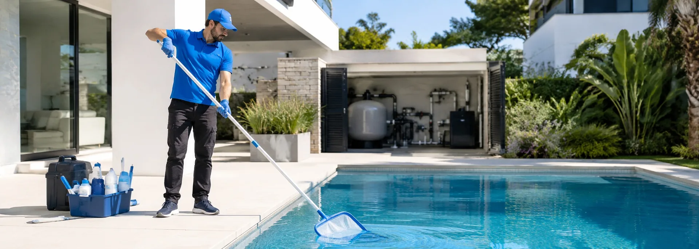
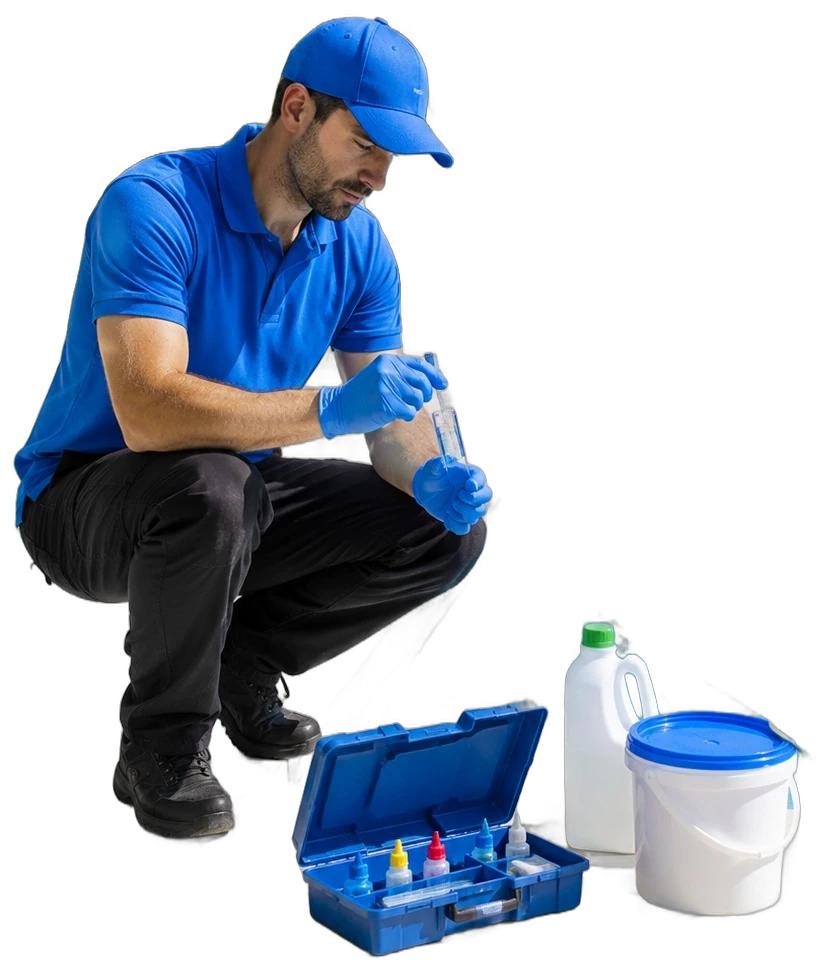
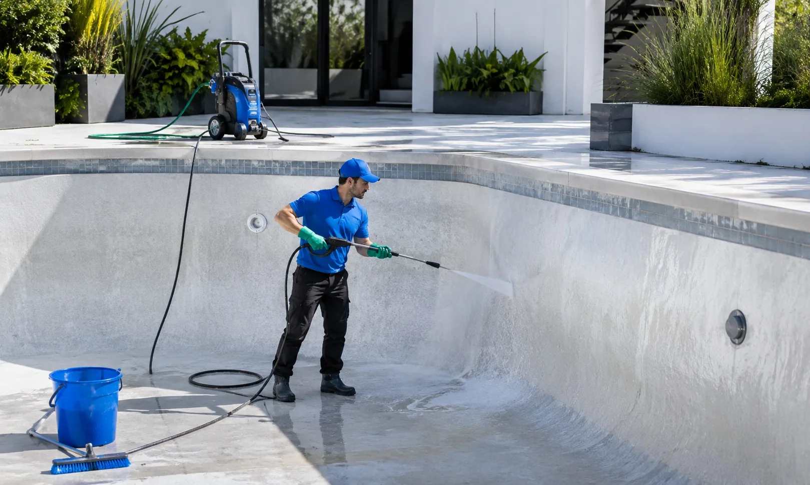
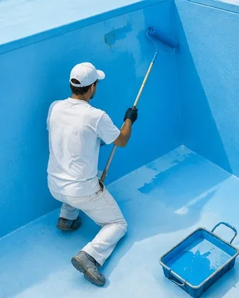
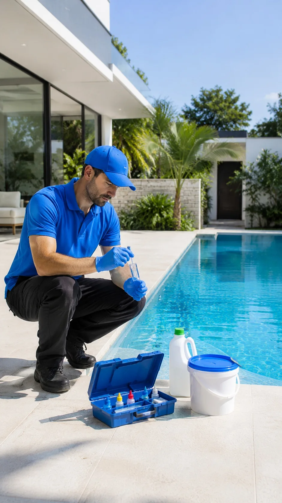
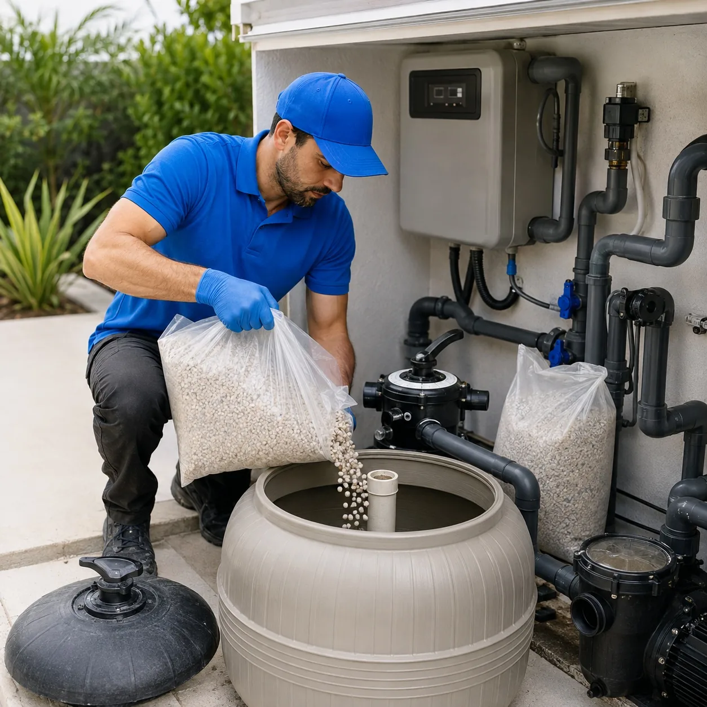
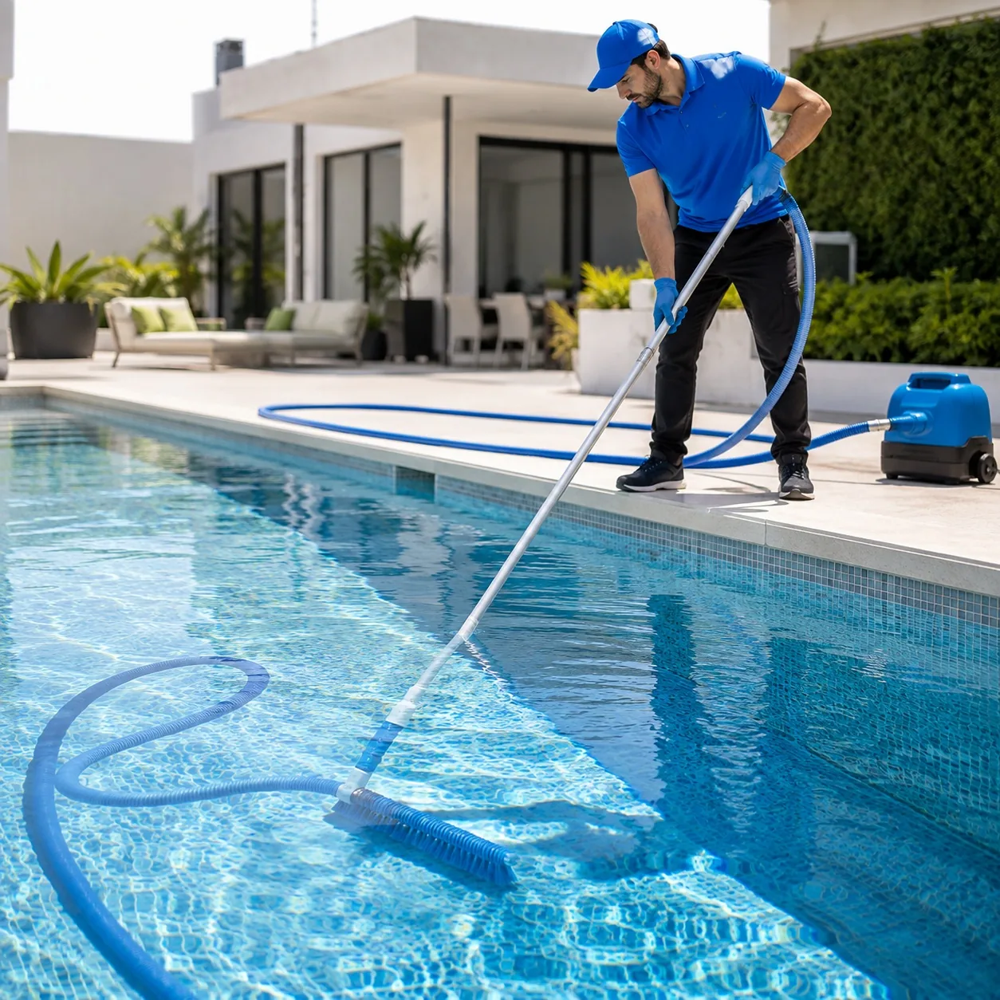
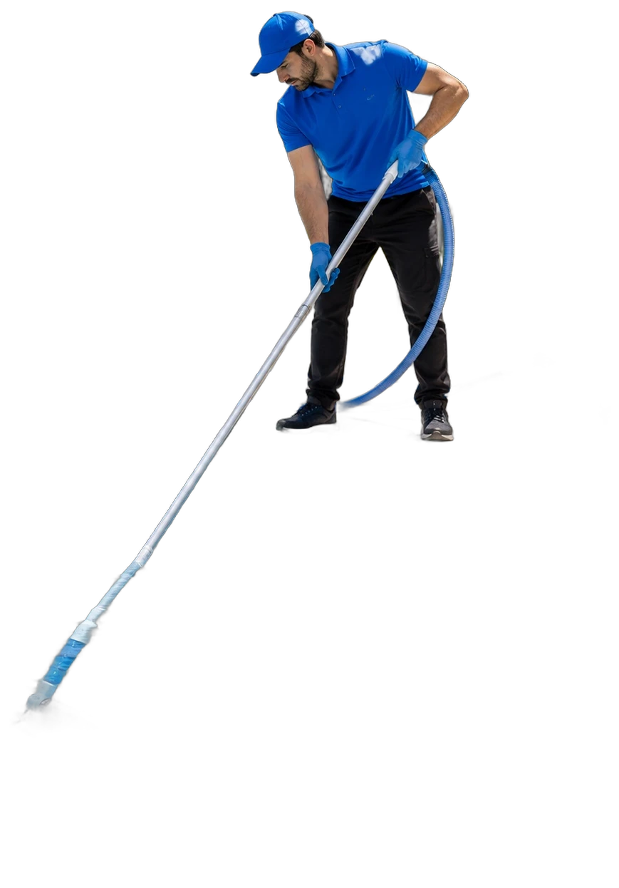

Temporada alta
Abono semanal
Para la pileta que se usa todos los fines de semana, de octubre a marzo.
- Cuatro visitas por mes
- Barrido, cepillado y skimmers
- Control químico en cada visita
- Prioridad antes de fines de semana largos
Vaciado · Limpieza · Pintura · Químicos · Filtro
Mantenimiento integral de piscinas en CABA y Gran Buenos Aires. Un solo equipo para todo: el agua, el vaso y el filtro.


01 — Diagnóstico
Elegí el estado que más se parece al de tu pileta y te decimos qué le pasa, qué hacemos y cuánto tarda.
02 — El ciclo
Este es el recorrido completo de una puesta a punto. Scrolleá y mirá la pileta.
Bajamos el nivel con bomba sumergible propia y desagote controlado, cuidando que el vaso no quede sin agua más tiempo del necesario.
Hidrolavadora en paredes y piso, cepillado de la línea de flotación y remoción del sarro que el barrido semanal nunca llega a sacar.
Reparación de fisuras, lijado y dos manos de pintura para piletas. Terminación pareja, sin marcas de rodillo ni manchas al llenar.
Sacamos la carga vieja del filtro, limpiamos el difusor, cargamos grava y arena nuevas y recién ahí empezamos a llenar.
Medimos pH, cloro, alcalinidad y dureza, corregimos con la dosis justa y te entregamos la pileta con el agua lista para usar.
03 — Servicios
No derivamos nada: el agua, el vaso, la pintura y el equipo de filtrado los resolvemos nosotros.
Barrido de fondo, cepillado de paredes, limpieza de skimmers y prefiltro, y control químico en cada visita. Vos abrís la puerta y listo.

02Vaciamos con bomba propia, sacamos sarro y línea de flotación con hidrolavadora y dejamos el vaso listo para pintar o volver a llenar.

03Lijado, reparación de fisuras y dos manos de pintura para piletas, clorocaucho o epoxi según el estado y el material del vaso.

04Medimos pH, cloro, alcalinidad y dureza. Corregimos con la dosis justa y te dejamos anotado qué agregar entre visita y visita.

05Cuando el filtro ya no filtra no alcanza con retrolavar: sacamos la carga apelmazada, limpiamos el difusor y cargamos grava y arena nuevas.
04 — Abonos
Temporada alta
Para la pileta que se usa todos los fines de semana, de octubre a marzo.
Todo el año
El equilibrio que eligen la mayoría: el agua nunca se da vuelta y el filtro llega sano a diciembre.
Una sola vez
Apertura o cierre de temporada, o rescate de una pileta que quedó abandonada.
05 — Zona
Cubrimos CABA y buena parte del Gran Buenos Aires. Si tu barrio no está en la lista, escribinos igual: casi siempre llegamos.

06 — Clientes
“Teníamos la pileta verde a tres días del cumple de mi hija. Vinieron un sábado, hicieron el tratamiento de choque y el domingo estaba para tirarse.”
“Pintaron el vaso en cuatro días y quedó parejo, sin manchas. Ya van dos temporadas que la mantienen ellos.”
“Me cambiaron la grava del filtro y el agua dejó de estar lechosa. Explican todo lo que hacen y te dejan la ficha.”
07 — Preguntas
En temporada alta lo ideal es una visita por semana: el calor y el uso consumen el cloro muy rápido. Fuera de temporada, con una visita cada quince días alcanza para que el agua no se dé vuelta.
Sí, y es el mejor momento para vaciar, reparar y pintar: nadie usa la pileta y llegás a la temporada con el vaso terminado.
Sí, vamos con cloro, alguicida, floculante y regulador de pH. Te pasamos la dosis usada en cada visita para que sepas qué se aplicó.
Entre tres y cinco días según el tamaño y el estado del vaso: vaciado, hidrolavado, reparación de fisuras, lijado y dos manos de pintura con su tiempo de secado.
Si retrolavás y el agua sigue turbia, la presión del manómetro queda alta o el filtro devuelve arenilla a la pileta, la carga ya está apelmazada y hay que renovarla.
08 — Contacto
Respondemos dentro de las 24 horas. Si podés, mandanos una foto del agua: con eso ya sabemos por dónde arrancar.
11 4971-5028